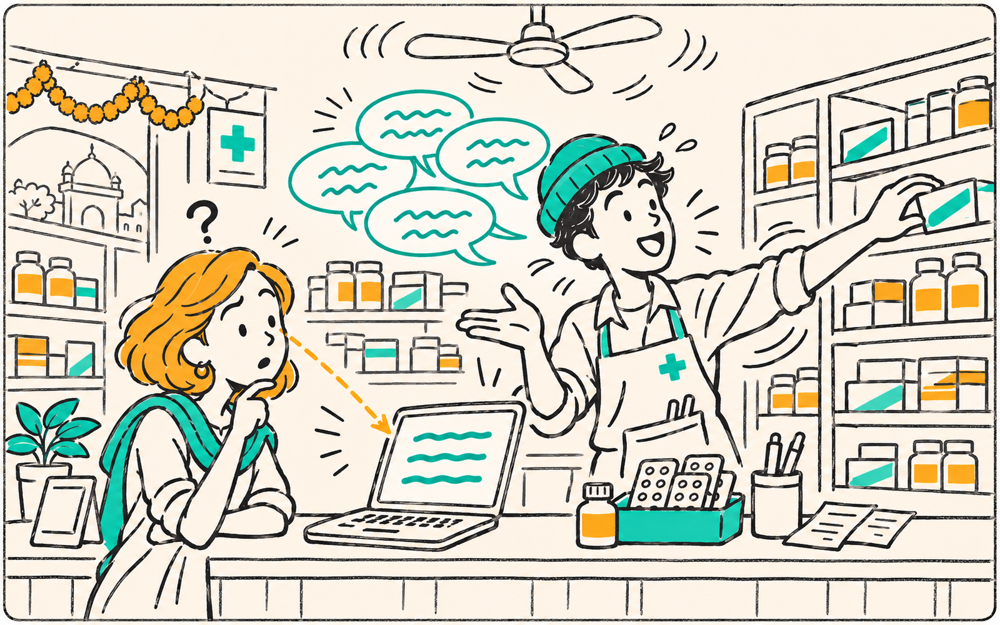

01 / The problem
The five-minute counter barrier.
A scene we built this for
Pharmacy, 18:42

Fixed with one shared browser tab
Zero signups
Ananya is buying medication for her grandmother.
The pharmacist is rushed, the shop is loud, and Ananya is deaf. He rattles off the dosage while turning to the shelf — the lipreading chain shatters. For medicine, a guess is not good enough. Notes apps are slow, awkward, and everyone in the queue is watching.
Illustrative scene
Live numbers below ↓
Pharmacist (voice)
"आधा tablet खाने से पहले। Dizziness आये toh band kar dena।"
✓ Captioned by Prisma · codemix
Ananya (spoken aloud)
"Samajh gayi. Subah leni hai ya raat ko?"
🔊 Spoken by Timbre~0.3scaptions*
10+languages
1shared screen
*processing_time from our live API tests